Quarto website 4
Interacting with our GitHub repository
website
We are continuing this semester’s Code Club series on making yourself a website. So far, we have gone through:
- How to create your site
- How to add a page to your site
- How to customize your site’s look
- How to publish your site using Git and GitHub
Today, we are going to focus on interacting with our GitHub repository (or “repo” for short):
- We’ll start with a recap on Git and GitHub repositories
- For those of you who would like to have a shorter URL for your website, we’ll change your GitHub repository name
- We’ll add some info to our repository, including a README file
- We’ll practice with saving your local updates and pushing them to remote
- If time allows, we’ll add links to your repo on your website
1 Git and GitHub repository recap
Now that you have actually created a local Git and a remote GitHub repository for your website, let’s revisit this illustration that Jess explained last week:
And here is a graphic depicting our workflow more specifically, where we basically have a fourth area: the actual website.

Let’s go through the four different “areas” in this illustration and how they interact:
- Your working directory1 (bottom right in the illustration) is the folder on your computer that contains all the files for your website. Within that folder:
- The
docsfolder contains HTML and other files representing your rendered website - Everything else (
.qmd,.ymletc.) is the source code for your website
- The
Your local Git repo (bottom left in the illustration) contains one or more saved snapshots (versions through time) of your working directory.
The most recent snapshot of the local repo does not necessarily correspond to the state of your working directory: there is purposefully no auto-saving, so saving a snapshot (i.e.
commiting) is something you always have to actively do2.Saving a snapshot of the current state of your working dir can be done in a number of ways, such as using Git commands in a terminal (the
addandcommitverbs in the illustration) or using the Git pane in RStudio, but the method we have shown you here uses the GitHub Desktop app.
Your remote GitHub repo (top in the illustration) is simply the online counterpart of your local repo.
Just like changes to your working dir aren’t automatically saved to your local repo, new snapshots in your local repo aren’t automatically published to your remote repo: to do so, we have to
pushour changes online. (The counterpart topushispull, which we won’t talk more about here, will pull in changes from the online repo to your local repo.3)Just like for committing, we will use GitHub Desktop to push our changes online.
We “activated” the website area last week using some settings for the online repo. Therefore, we don’t have to think much about this aspect – there basically is an automatic connection between the remote repo and the website: GitHub will detect whenever we’ve changed our online repo, and will update the website for us.
In summary, when you have made changes to your website that you would like to put online, go to GitHub Desktop to save a snapshot to your local repo (i.e., to commit) and then push those changes to your remote (online) repo. GitHub will then detect the changes to your online repo and update your website.
We will practice this routine today.
2 Changing the URL to your website
The URLs to your repository and website are automatically determined based on your GitHub username and repo name as follows:
- Website:
https://<github-username>.github.io/<github-repo-name> - GitHub repo:
https://github.com/<github-username>/<github-repo-name>
For instance, the Code Club practice website is under the GitHub username osu-codeclub and the repository name practice-website, and therefore, it has the following URLs:
- GitHub repo: https://github.com/osu-codeclub/practice-website
- Website: https://osu-codeclub.github.io/practice-website
However, the main Code Club website has a shorter URL that only contains the GitHub username: https://osu-codeclub.github.io. You, too, can change your website’s URL so that it only contains your GitHub username.
- If you’re making a personal website, you’ll likely want to make this change.
- If you’re making a website covering a specific topic or project, and could see yourself making other similar websites, this URL change doesn’t make as much sense.
How can you get such an URL for your website? You can do so by giving your GitHub repo the name <github-username>.github.io.
So, for whoever would like to have the shorter URL format, let’s change the GitHub repo name to your GitHub username. In your GitHub repository, click “Settings”:
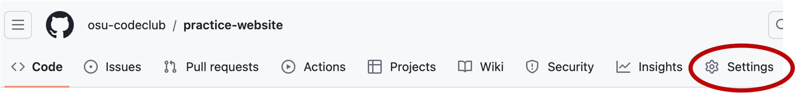
Then, right at the top of the General page (the one that should open by default), click inside the “Repository name” box, and you’ll notice that you can type to change the name. The new name of the repo should by your GitHub username (which should e.g. show in the URL to your repo) followed by .github.io. For example, if your username is lucy, your new repo name should be lucy.github.io. After you’ve typed the new name, click the “Rename” button:xxx
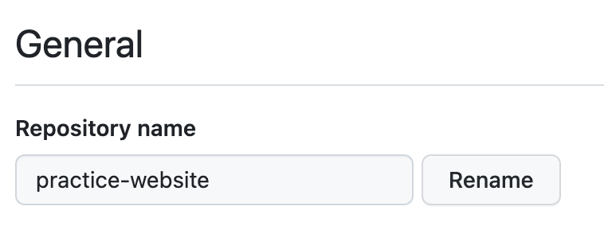
That should send you back to your repository’s main page, and if all went well, your URL should have been updated immediately. To check this, you can go back to your repo’s settings and then click on “Pages” on the left-hand side, as shown below:
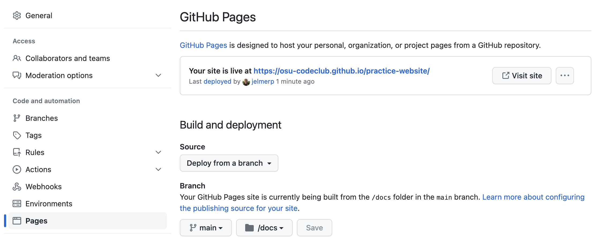
3 Adding About info and a README
3.1 About
While we’re making edits on GitHub, let’s first add a very brief description of our repo, and the URL to the website, to the “About” section on the main page of your repo.
Click the cog wheel icon shown below, and then:
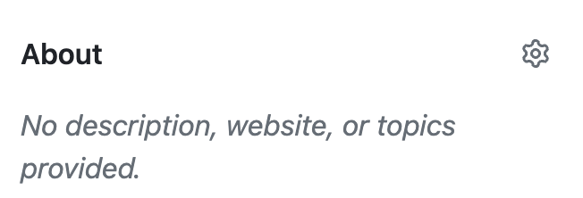
Enter a one-sentence description of your repo in the “Description” box.
Below “Website”, you can simply check the box “Use your GitHub Pages website” to add your website’s URL to this About section.
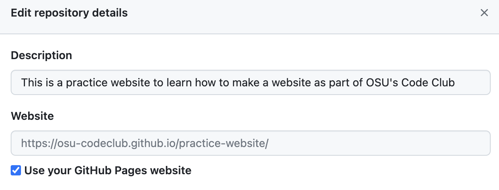
Now, your About section should look something like this:
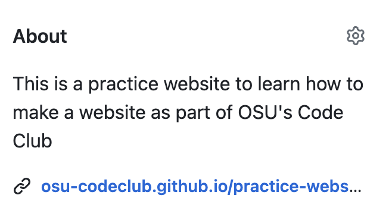
3.2 README
Next, let’s add a README file to our repo.
If we create a file that is called e.g. README or README.md in the top-level folder of our repo, GitHub will automatically show it (in rendered form, if the file is written in Markdown) on the main page of our repository. Besides the About section, this is another customary way you can make it clear to people that visit your repo on GitHub, what this repo is all about.
Unlike the changes we made so far today (our website URL, the About info), creating a README file will actually modify the contents of our repo. Therefore, it will be easiest to create this file on our own computer, commit it to our local repo, and push the changes to the remote repo4.
Your turn: Create a README file for your website’s repo
Switch to your RStudio window with your website RStudio project open, then click on “File” => “New File” => “Markdown File” (halfway down).
If the new file doesn’t automatically open in “Visual” mode, you can click the “Visual” button to do so, unless you would like to practice with Markdown syntax.
Save the file straight away as
README.md, in the top-level folder where you also have, e.g., the_quarto.ymlfile.Add some text to the file, which can be as long or short as you want; you’ll mostly just want to make it clear (again) that this repo is the source for your website. For example, I’ll add for this practice website:
## This is the repository for a practice website part of OSU's Code Club
- OSU Code Club: <https://osu-codeclub.github.io>
- OSU Code Club practice website: <https://osu-codeclub.github.io/practice-website>
Your README plain Markdown file
The “README” in the filename doesn’t have to be in all-caps, but this is customary.
The
.mdextension stands for (plain) Markdown, as opposed to Quarto Markdown (.qmd) or R Markdown (.Rmd). The difference between plain Markfown and Quarto/R Markdown files is that the latter can execute code (usually but not limited to R code).An interesting side note is that the conversion of a
.qmd/.Rmdfile to the final output file (HTML in our case, could e.g. also be PDF) takes place in two steps: first, it is rendered to.md, which is then rendered to the final output format.
4 Updating the online repo
Now that we have made changes to our “working directory” by adding a README file, we should commit these changes to our local repo and then push them to the remote repo. For that, we’ll switch to GitHub Desktop.
When you open GitHub Desktop, it should automatically focus on your website’s repo, and you should see a bunch of changes listed in the left-hand panel.
To commit all of these changes at once, focus on the bottom-left part, where you can leave the “Description” box empty, but you have to fill out something in the “Summary (required)” box, which should ideally summarize the changes you just made, e.g.:
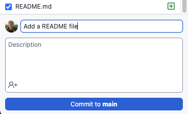
Then, click on the large blue “Commit to main” button (this button may also say “Commit to master”) to commit your changes to your local repo.
Next, the following should appear in the main GitHub Desktop pane, and you can click “Push origin”:
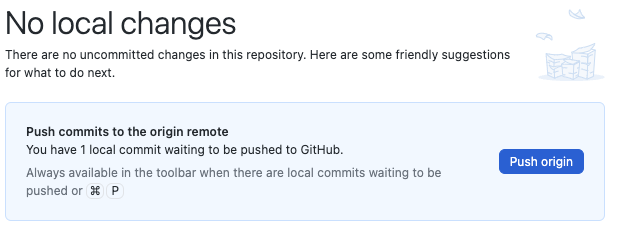
Git terminology
The “master” or “main” in e.g. “Commit to main” refers to a specific so-called branch of your repository. With Git version control, it is for example common to work on experimental changes in your code in a separate (non-main) branch, so that your code in main keeps working in the meantime.
“Origin” is the default name that is given to the default connection with your remote repo, so “Push origin” means push to the default remote repo.
Let’s switch to our repo page on GitHub in our browser, where we should immediately see our new commit referenced at the top:
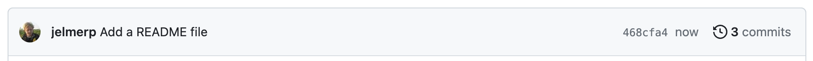
And if you scroll down, the README.md should appear in rendered form below the file listing:
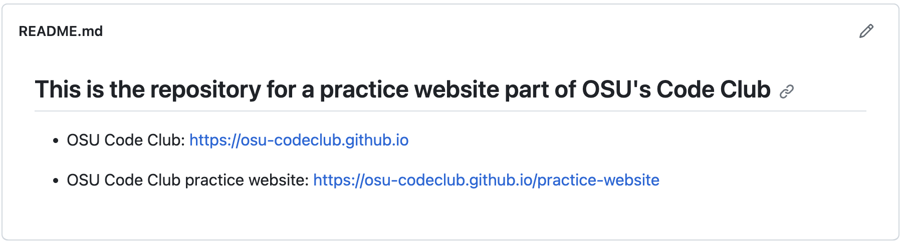
Finally, a couple of things to note about what we just did:
Unlike most changes you’ll make to your repo, this change did not affect our website at all.
We can freely change our GitHub repo name without having to change the name of our folder with the website: these two can be the same, but they can also differ.
5 Referencing our repo on the website
Finally, we can reference our GitHub repo on our website in two ways, by making changes in our _quarto.yml.
First, we can add a GitHub icon to the right-hand end of our top navigation bar, which will link to our GitHub repom as follows:
website:
navbar:
right:
- href: "https://github.com/osu-codeclub/practice-website"
icon: githubSecond, we can add one or two “repo actions” links to the Table of Contents that on each page on our website, which will allow people to:
Action
issue: Report an “issue” on GitHub, e.g. report that a link on your site is broken. This will open a new so-called issue for your repo – you should get an email when this happens.Action
edit: Make a suggestion for a change (“Edit this page”), e.g. fix the broken link. This will open a new so-called pull request for your repo, and you can choose whether you want to accept this request, in which case it should automatically update your repo and website.
If you want both of these type of links, you should add the following to your _quarto.yml:
website:
repo-url: https://github.com/osu-codeclub/osu-codeclub.github.io
repo-actions: [edit, issue]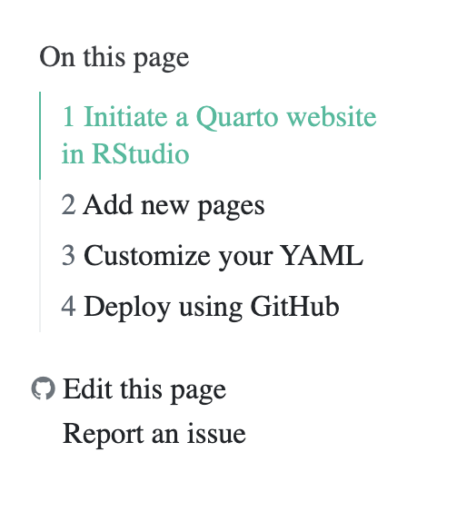
Your turn: update _quarto.yml and get the changes to your website
Make some or all of the suggested changes to your
_quarto.ymlfile.Render your entire website, so the changes will be included in the website’s HTML files in your
docsfolder. (Recall that to render your full website, as opposed to a single document, click the “Render Website” button in RStudio’s “Build” Tab.)Go to GitHub Desktop and commit the changes to your local repo.
Still in GitHub Desktop, push the changes to your remote repo.
Go to you GitHub repo, and check that you see your most recent push.
Go to / refresh your website, and see if the changes are there. (You may have to wait a minute or so.)
Footnotes
Directory (or “dir” for short) is just another word for a folder on your computer.↩︎
It is also possible to save to a snapshot with only some of the changes that you’ve made to your working dir: you can
addchanged files individually rather than all at once, too.↩︎Pulling in changes from the online repo is only relevant either when you are collaborating with others on a repo, such that sharing of changes happens via the online repo, or when you have made changes directly to the online repo (this is possible but generally not recommended).↩︎
Alternatively, we could create and write this file directly on the GitHub website, but if we would do this, we would need to “pull” in these changes from remote, which is something we won’t cover here.↩︎